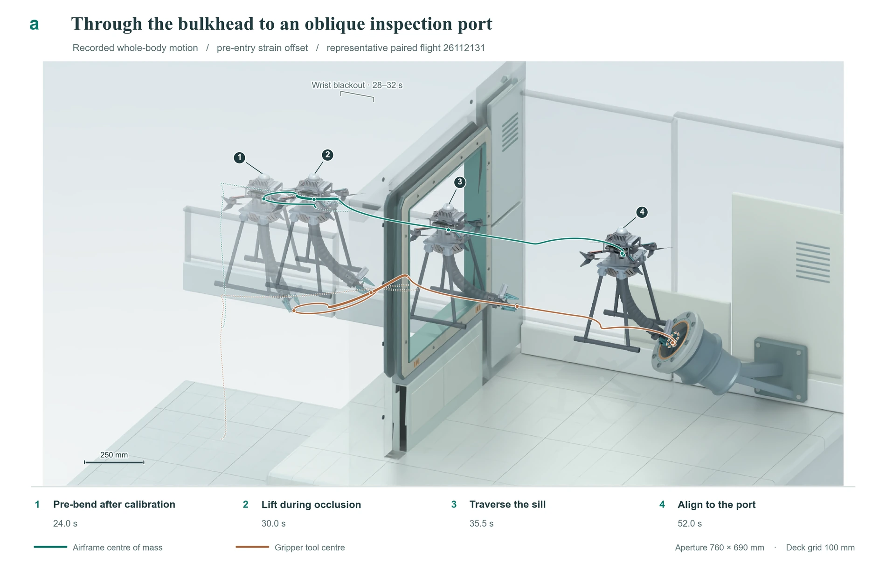
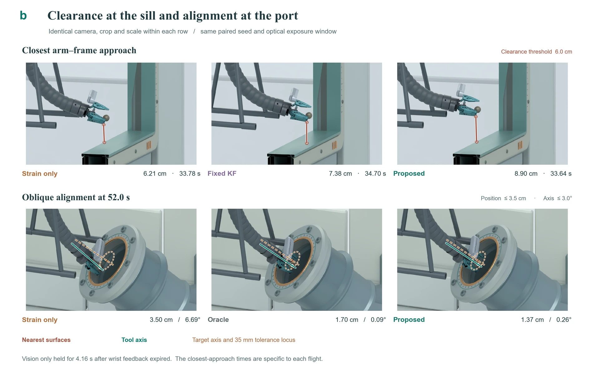
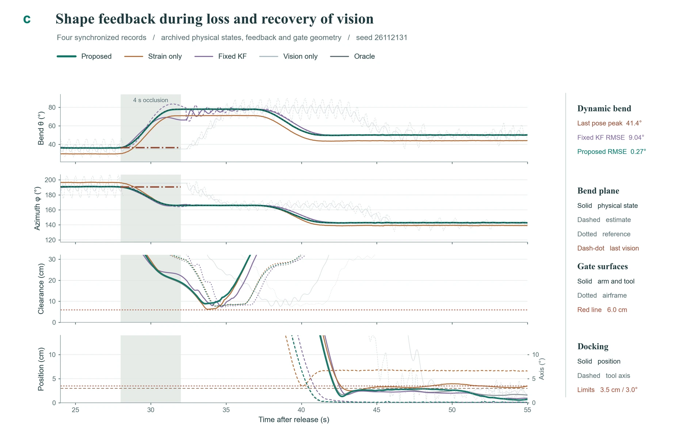

M0 · 隔舱场景与主图 / 2026-11-21 10:26（北京时间）
穿过隔舱，再对准斜置检修接口
同一工况下，纯应变、固定权重 KF、增广融合的臂爪最小净空依次为 6.21、7.38、8.90 cm。全景与同机位特写把这段差异定位到门槛，并在门后比较夹爪与法兰的轴向。
大附件单独提供：四组高清图与矢量源图。
模型与场景

01全景残影与夹爪流线
按 24.0、30.0、35.5、52.0 秒读四个整机姿态。铜色曲线跟踪工具中心，青色曲线跟踪机身质心。


02下槛净空与法兰对准
上排是各趟独立的最近时刻，下排固定在 52.0 秒。每排共用视角、比例和裁切。

曲线与机制图

01弯曲幅值、方位、净空与对准误差
灰带内完全失视 4 秒。本文方法的弯角 RMSE 为 0.27°，保留遮挡前最后一帧的弯角峰值误差为 41.4°。

视频回放
01同机位闭环飞行回放
1920 × 1080。侧视、过门或对准近景、原始腕部 RGB 及读数同步回放，覆盖释放后 23–55 秒。
论文与报告
两页审阅 PDF
第一页看任务空间与接触最近点，第二页读同步曲线与五方法配对表。
全景、近景和同步曲线合版
三组图的可放大矢量版。
数据及运行记录
四组高清图与矢量源图
含全景、同机位特写、四排曲线及合版。每组提供 PNG、PDF 和 SVG。
场景几何校验
42 趟成功轨迹共 153,500 个记录姿态与 153,458 段相邻姿态扫掠的分离证书。
六十趟原始记录指纹
按趟核对原包、物理状态、控制记录和评分轨迹。